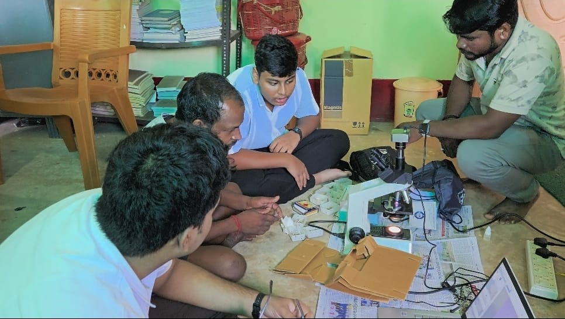

Education
DAV Public School, Unit VIII
Participation in the Atal Tinkering Lab, innovation activities, robotics, programming, science exhibitions and research projects, alongside student leadership roles.

 Suryakanta
SuryakantaStudent researcher and innovator
Exploring science. Building practical solutions.
I bring together computer vision, embedded systems and scientific experimentation to explore challenges in sericulture, accessibility and education. I co-founded SERISCOPE and also participate in science competitions, student leadership, geoscience outreach and community initiatives.
Background · 01
I am interested in how scientific ideas become useful technologies.
My approach combines understanding a problem, reviewing possible solutions, developing a prototype and testing how it performs.
Through SERISCOPE and the Interactive Braille Learning System, I have explored applications in agriculture and accessible education. My research experience has involved experimental design, data collection, model development, hardware integration and scientific documentation.
Beyond technical projects, I take part in student leadership, mathematics and science competitions, quizzes and international geoscience initiatives.
Education
Participation in the Atal Tinkering Lab, innovation activities, robotics, programming, science exhibitions and research projects, alongside student leadership roles.
Academic profile
790 in Reading and Writing and 800 in Mathematics.
Download resume ↓Python · C++ · Java · HTML · AI/ML · Computer Vision · OpenCV · Arduino · Edge AI · IoT · Linux (Kali)
Artificial Intelligence · Embedded Systems · Agriculture Technology · Accessibility Technology · Computer Vision · Earth Science Education
Research and development · 02
These projects explore how computing and electronics can support specific problems in agriculture, accessible learning and conservation.

01 · AI and IoT · Completed
An offline, low-cost Edge-AI tool that reads microscope images to detect pebrine disease and assess egg fertility in tassar silkworm grainages.
Read the case study →02 · Accessible education
A proposed tactile and auditory learning machine that converts spoken input into raised Braille characters.
Read the case study →
03 · Conservation technology
An explainable edge-monitoring prototype for artificial-light and thermal conditions at olive ridley rookeries.
Read the case study →Awards and recognition · 03
Explore recognition spanning scientific research, engineering, mathematics, astronomy, quizzes and academic competitions.
Special Award by Zydus Pharmaceuticals (USA) Inc. with a US$1,500 award for SeriScope. The two-student team was Tripathy Divyajyoti Senapati and Suryakanta Lenka.
Related project →Selected for Team India for Regeneron ISEF 2026 in Phoenix, USA, through the SeriScope project. The team comprised Tripathy Divyajyoti Senapati and Suryakanta Lenka.
Related project →Gold Medal recognition for SeriScope at the Initiative for Research & Innovation in STEM National Fair. The team comprised Tripathy Divyajyoti Senapati and Suryakanta Lenka.
Related project →Selected among approximately 2,93,000 teams for innovation, feasibility and potential societal application.
The Interactive Braille Learning System was selected among the Top 100 teams.
Related project →Invited with the institution listed as Prayoga Institute of Education Research.
Recognised as Best School Team at the Udghosh Quiz hosted by KIIT University.
Gold Medal recognition in the International Youth Mathematics Challenge.
Gold Medal recognition in the International Astronomy and Astrophysics Competition.
Selected for the national camp of the Earth Science Olympiad.
National-level selection for a technology project applying artificial intelligence, computer vision and embedded systems.
Qualified in the Indian Olympiad Qualifier in Mathematics.
Placed second in the National Science Talent Search organised by NIST University.
Placed second in the Gen-Biz Quiz organised by A4 CONSERV.
The Interactive Braille Learning System was selected among the Top 200 teams nationwide.
Related project →Winner of the Indian Railways Inter-School Quiz.
Qualified for the national round of the National Automobile Olympiad organised by the Automotive Skills Development Council.
Recognised as a National Top Performer in Safe in Cyberia, organised by NDTV.
Photo journal
Use the controls, arrow keys or a swipe to move through the photographs. Open any image for a full-screen view.
Research, leadership and outreach · 04
Roles across research initiatives, technology development, student leadership and community participation.
Internship
A programme focused on technology, problem-solving, mentorship and practical learning through structured challenges in critical thinking, entrepreneurship and technology-based solution development.
Research initiative
System design, hardware integration, AI model development, research coordination, validation activities and project management for affordable precision-sericulture technology.
Research
Research engagement connecting sericulture and technology development.
Research
Work under senior scientists on artificial intelligence, computer vision and embedded systems, including SERISCOPE development and validation, experimental design, data collection, model development, hardware integration and scientific documentation.
Earth science outreach
International collaboration on Earth science education, outreach and youth-led initiatives, with a focus on scientific inquiry and environmental awareness.
Student leadership
Supporting student innovation initiatives and a school community interested in research, technology and practical problem-solving.
Student leadership
Supported activities connected with student innovation and scientific interests.
Volunteering
Helped coordinate recurring events involving approximately 1,500–2,000 students across Grades 8–12, providing a platform for ideas and innovation activities.
Volunteering
Helped the organisation connect with funding institutions and developed the Interactive Braille Learning System at the intersection of embedded technology and accessible education.
Connect · 05
For research discussions, project collaboration, science outreach or opportunities to exchange ideas, connect with me through the links below.